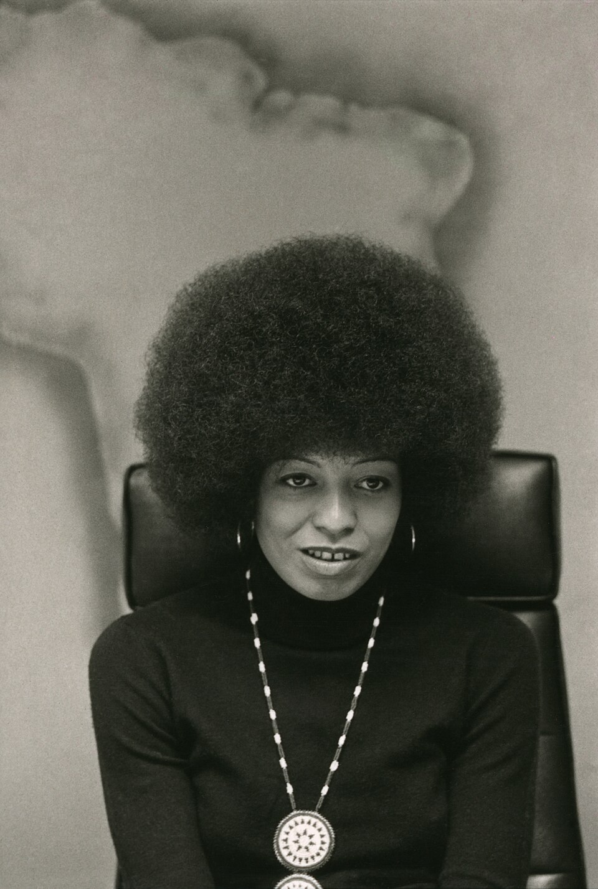

Conheça a exposição Vozes Negras e Indígenas
Uma exposição digital sobre 20 trajetórias de mulheres indígenas e negras que marcaram a história, a cultura, a resistência e a memória coletiva.
Conhecer exposiçãoVinte mulheres. Muitas formas de transformar a história.
A exposição reúne trajetórias de mulheres negras e indígenas que fizeram da arte, do conhecimento, da liderança e da resistência caminhos para mudar o Brasil.
Conhecer Angela Davis
1944 — presente
Angela Davis
Filósofa, professora, escritora e ativista
Pensar a liberdade como uma prática coletiva.
Nascida em Birmingham, nos Estados Unidos, Angela Davis tornou-se uma das vozes mais influentes das lutas por justiça racial, feminismo e abolição prisional. Sua trajetória aproxima pensamento e ação ao mostrar como raça, gênero, classe e encarceramento estão profundamente conectados.
Consultar biografia na UC Santa Cruz